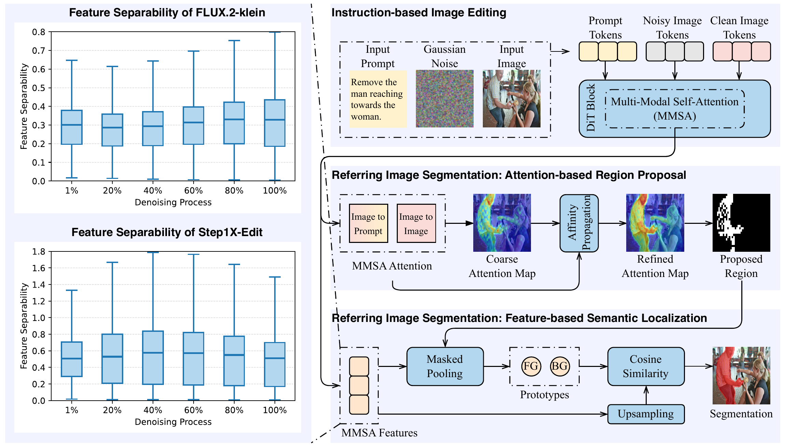
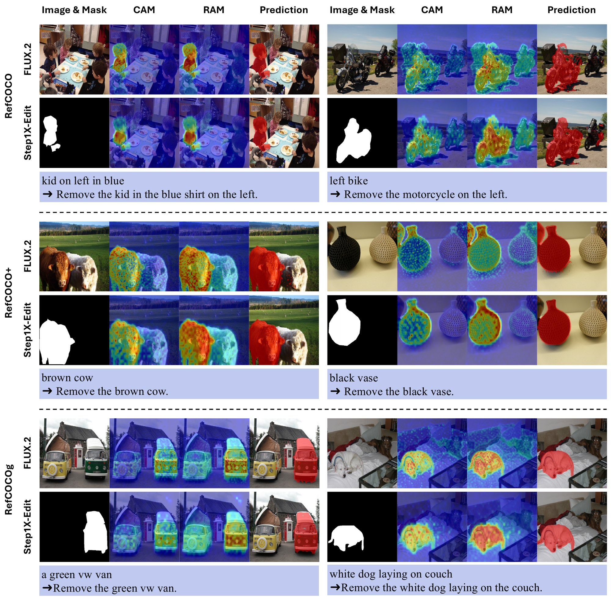

Abstract
Instruction-based image editing (IIE) models have recently demonstrated strong capability in modifying specific image regions according to natural language instructions, which implicitly requires identifying where an edit should be applied. This indicates that such models inherently perform language-conditioned visual semantic grounding. In this work, we investigate whether this implicit grounding can be leveraged for zero-shot referring image segmentation (RIS), a task that requires pixel-level localization of objects described by natural language expressions. Through systematic analysis, we reveal that strong foreground-background separability is already present in the internal representations of these models at the earliest denoising timestep, well before any visible image transformation occurs. Building on this insight, we propose a training-free framework that repurposes pretrained image editing models for RIS by exploiting their intermediate representations. Our approach decomposes localization into two complementary components: attention-based spatial priors that estimate where to focus, and feature-based semantic discrimination that determines what to segment. By leveraging feature-space separability, the framework produces accurate segmentation masks using only a single denoising step, without requiring full image synthesis. Extensive experiments on RefCOCO, RefCOCO+, and RefCOCOg demonstrate that our method achieves superior performance over existing zero-shot baselines.
Method
We convert a referring expression into an editing instruction by prepending "remove", pass it with the image through a pretrained MM-DiT editor (FLUX.2-klein or Step1X-Edit), and stop after one denoising step. Two complementary components turn the editor's internal signals into a mask.
Separability appears at the first step
We measure a Fisher-style separability score between foreground and background MMSA features of the clean image tokens across the denoising trajectory. Both editors separate the referred object from the background at the earliest timestep, and the separability stays relatively stable afterwards (left panel below).
Attention-based region proposal
Image-to-prompt attention gives a coarse attention map of where the instruction points. Image-to-image attention then serves as an affinity matrix that propagates this map across semantically coherent regions, which yields a refined attention map and a high-confidence proposed region.
Feature-based semantic localization
Foreground and background prototypes are pooled from MMSA features inside and outside the proposed region. Each pixel is assigned to the prototype with the higher cosine similarity, which gives the final mask.

Results
Zero-shot referring image segmentation on RefCOCO, RefCOCO+, and RefCOCOg. Among training-free methods, bold marks the best result in each column and underline the second best.
Overall IoU: intersections and unions summed over all samples.
| Method | Backbone | Pretrained models | RefCOCO | RefCOCO+ | RefCOCOg | |||||
|---|---|---|---|---|---|---|---|---|---|---|
| val | testA | testB | val | testA | testB | val | test | |||
* Uses additional data beyond the task-specific dataset. Numbers in parentheses are the parameter counts of the DiT models.

Citation
@article{he2026early,
title={Early Semantic Grounding in Image Editing Models for Zero-Shot Referring Image Segmentation},
author={He, Jingxuan and Wang, Xiyu and Wang, Yunke and Zheng, Mengyu and Xu, Chang},
journal={arXiv preprint arXiv:2605.13122},
year={2026}
}